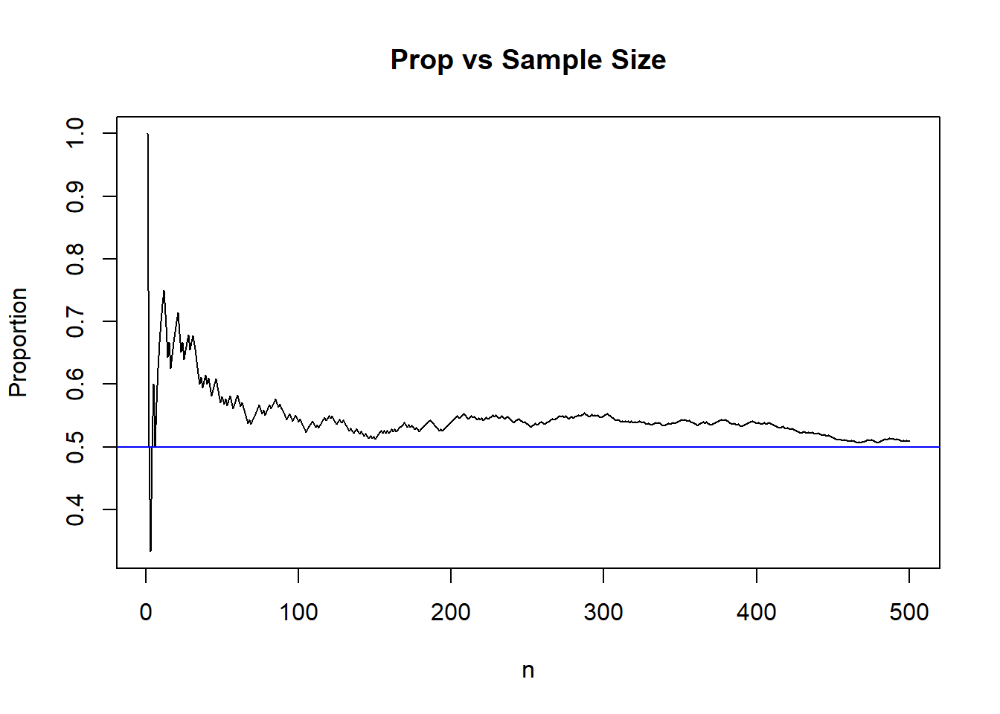

11 Sampling Distributions and the Central Limit Theorem (UNDER CONSTRUCTION)
11.1 Key Ideas and Terms
Consider this simple scenario. We want to find the distribution associated with the systolic blood pressure of American adults. To be able to achieve this goal, we would have to get the systolic blood pressure of every single American adult. This is usually not feasible as researchers are unlikely to have the time and money to interview every single American adult. Instead, a representative sample of American adults will be obtained, for example, 750 randomly selected American adults are interviewed. We can then create density plots, histograms, compute the mean, median, variance, skewness, and other summaries that may be of interest, based on these 750 American adults.
11.1.1 Population Vs. Sample
The above scenario illustrates a few concepts and terms that are fundamental in estimation. In any study, we must be clear as to who or what is the population of interest, and who or what is the sample.
The population (sometimes called the population of interest) is the entire set of individuals, or objects, or events that a study is interested in. In the scenario described above, the population would be (all) American adults.
The sample is the set of individuals, or objects, or events which we have data on. In the scenario described above, the sample is the 750 randomly selected American adults.
In short, we are analyzing data from a sample and then try to make an inference about the population.
Ideally, the sample should be representative of the population. A representative sample is often achieved through a simple random sample, where each unit in the population has the same chance of being selected to be in the sample. In this section, we will assume that we have a representative sample. Note: You may feel that obtaining a simple random sample may be difficult. We will not get into a discussion of sampling (sometimes called survey sampling), which is a field of statistics that handles how to obtain representative samples, or how calculations should be adjusted if the sample is not representative. There is still a lot of research that is being done in survey sampling.
11.1.2 Parameter Vs Estimator
Now that we have made the distinction between a population and a sample, we are ready to define parameters and estimators.
A parameter is a numerical summary associated with a population. In the scenario described above, an example of a population parameter would be the population mean systolic blood pressure of American adults.
An estimator or a statistic is a numerical summary associated with samples. An estimator is typically used to estimate a parameter. In the scenario described above, an estimator of the population mean systolic blood pressure of American adults could be the average systolic blood pressure in our sample. So the sample mean is an estimator of the population mean.
An estimated value, or estimate, is the actual value of the estimator based on a sample. In the scenario described above, suppose the average systolic blood pressure of the 750 American adults is 140 mm Hg. We will say the estimated value of the mean systolic blood pressure of American adults is 140 mm Hg.
So a parameter is a number that is associated with a population, while an estimator is a number that is associated with a sample. Some other differences between parameters and estimators:
- The value of parameters are unknown, while we can actually calculate numerical values of estimators.
- The value of parameters are considered fixed (as there is only one population), while the numerical values of estimators can vary if we obtain multiple random samples of the same sample size. Using the scenario above again, suppose we obtain a second representative sample of 750 American adults. The average systolic blood pressure of this second sample is likely to be different from the average systolic blood pressure of the first sample. This illustrates that there is variance associated with estimators due to random sampling.
11.1.3 Sampling Distributions
Now imagine that we keep obtaining representative samples of 750 American adults. We calculate the average systolic blood pressure from each sample. They are all different? We can then create a histogram or density plot (since the averages are numeric) to visualize the distribution of the sample means. Are they all close to each other? Or they spread out? Is the distribution bell-shaped or skewed?
The distribution associated with an estimator (from the same sample size) is called its sampling distribution. Some estimators have known sampling distributions (under certain conditions):
- The sample mean, \(\bar{X}\).
- The sample proportion , \(\hat{p}\).
Their sampling distributions have been proven mathematically. However, what happens when the “certain conditions” are not met, or if the estimator has no known sampling distribution? We can use simulations in these instances! When using simulations in such a setting, they are called Monte Carlo simulations. Monte Carlo simulations work because of the Law of Large Numbers, which we briefly describe next.
11.1.4 Law of Large Numbers
The Law of Large Numbers (LLN) states that as \(n\) gets larger and approaches infinity, the sample mean \(\bar{X}_n = \frac{X_1 + \cdots + X_n}{n}\) converges to the true mean \(\mu\). This implies that the sample mean tends to get closer to the population mean with larger sample sizes. The key word here is tends to, it is not a guarantee that the sample mean always gets closer to the population mean whenever \(n\) gets larger, but it generally does. This explains why we tend to trust results from larger sample sizes.
Another implication of the LLN is that we can use Monte Carlo simulations to verify theoretical results, since these results usually require us to simulate data based on a large number of independent replications.
We use an example to illustrate the LLN, which comes from flipping a fair coin. Let \(X\) denote whether the coin lands heads or tails, and let \(X=1\) for heads and \(X=0\) for tails. We can say that \(X \sim Bern(0.5)\) since the coin is fair. Imagine flipping the coin \(n\) times, and record the outcome after each flip, so \(X_1, \cdots, X_n\) denote the outcome of each flip. We know that \(E(X) = 0.5\) since \(X \sim Bern(0.5)\). The LLN informs us that \(\bar{X}_1, \cdots, \bar{X}_n\) should usually get closer to 0.5 as \(n\) increases. In other words, the value of the sample proportion after each flip should usually get closer to 0.5 with more flips. The code below simulates this example for \(n=500\), and Figure 11.1 shows how the sample proportions get closer to 0.5, in general, as \(n\) increases.
n<-500 ##make this big, but not too big otherwise picture is difficult to see
set.seed(23)
X<-rbinom(n,1,0.5) ##simulate 500 flips of fair coin
totals<-cumsum(X) ##count total number of heads after each flip
index<-1:n
props<-totals/index ##find proportion of heads after each flip
##create visual. LLN says that as n gets larger, the value of the sample proportion tends to get closer to 0.5
plot(props, type="l", main="Prop vs Sample Size", ylab="Proportion", xlab="n")
abline(h=0.5, col="blue") ##overlay 0.5 for easy comparison
Figure 11.1: LLN Example with Coin Flips
Note: The LLN actually comes in two versions, the Weak Law of Large Numbers (WLLN), and the Strong Law of Large Numbers (SLLN). What I have written gives an intuitive explanation of what the LLN implies.
11.1.4.1 Misconceptions with LLN
One key idea with the LLN is that the sample mean tends to get closer to the true mean as \(n\) gets larger. The key words here are “tends” and “as \(n\) gets larger”.
A misunderstanding of the LLN is the gambler’s fallacy, which erroneously believes that the sample mean must “self correct” and get closer to the population mean with small increments of \(n\).
Using the example from flipping a fair coin. The gambler’s fallacy erroneously thinks that:
- The proportion of heads should be close to 0.5, even with small \(n\).
- The results of subsequent flips should self correct, i.e. the proportion of heads get closer to 0.5 with the next flip. For example, if the first 5 flips are heads, the next flip is “due” to be tails since the proportion should get closer to 0.5 with the next flip.
The convergence to 0.5 comes from flipping the coin many times.
11.2 Monte Carlo Simulations
You may have noticed that we have used simulations in previous sections (e.g. Section 6.4.1) to help explain certain concepts. These simulations are called Monte Carlo simulations. The idea behind Monte Carlo simulations is to use repeated random sampling (and by repeated, we mean repeated a large number of times) to estimate features of data, usually probabilities and expected values. Monte Carlo simulations are used for the following purposes:
When the probability or expectation is too complicated to work out by hand. Recall that finding probabilities and expectations by hand involve summations or integrals, and it becomes obvious that working with summations and especially integrals can get onerous.
To verify theoretical results involving probability or expectations. While a lot of theory is proved using mathematics, most academic papers include Monte Carlo simulations to verify the theoretical results. We have done these to verify the Central Limit Theorem in Section 6.4.1.
To help confirm that you understand the meaning of theoretical results. The only way your code matches the theory is if you understand the theory.
11.2.1 Monte Carlo Methods for Expected Values
Suppose we want to find some expectation for a continuous random variable \(X\), \(E(g(X))\), where \(g\) is some function, i.e. \(E(g(X)) = \int_{-\infty}^{\infty} g(x) f_X(x).\) Monte Carlo methods avoid doing this integration by simulating \(X_1, \cdots, X_M\) from \(X\) and estimate \(E(g(X))\) with the sample mean of \(g(X)\), \(\frac{1}{M} \sum_{i=1}^M g(X_i)\). The LLN tells us that as \(M\) gets larger, this sample mean converges to \(E(g(X))\).
Monte Carlo methods replace the integral (or summation) with simulating a random variable repeatedly many times. We use a simple example to illustrate this idea.
Let \(X\) be a standard normal distribution. Suppose we want to find the value of \(E(X^2) = \int_{-\infty}^{\infty} x^2 \frac{1}{\sqrt{2 \pi}} e^{-x^2/2} dx\). Instead of working out this integral by hand, we carry out a Monte Carlo simulation by doing these steps:
- Simulate \(M\) random values from a standard normal, where \(M\) is large.
- Calculate \(X_1^2, \cdots, X_M^2\).
- Find the sample average of \(X_1^2, \cdots, X_M^2\).
set.seed(5)
reps<-10000 ## this is M
Xs<-rnorm(reps) ##generate M values of X
squared.values<-Xs^2 ##square each X
mean(squared.values) ##sample average of squared values. ## [1] 1.024546
##when reps is large, this sample mean should be close to the true E(X^2), which is 1Since \(X\) is standard normal, we know \(E(X) = 0\) and \(Var(X) = E(X^2) - E(X)^2 = E(X^2) = 1\). We see in our simulation that our estimated value for \(E(X^2)\) is pretty close to its theoretical value.
11.2.2 Monte Carlo Methods for Probabilities
Suppose we want to find the probability that a random variable satisfies some event \(E\), \(P(E)\). We could perform a summation or integral to find this probability, or estimate the probability using Monte Carlo simulations. What we will do is simulate \(X_1, \cdots, X_M\) from \(X\), where \(M\) is large, in other words, simulate a large number of replicates of \(X\). We then count how many of the \(X_i\)s correspond to event \(E\) happening, and then divide this number by \(M\), the number of replicates. We use an example to illustrate this idea.
Let \(X\) be a standard normal distribution. Suppose we want to find the probability \(P(X^2 > 1)\). We carry out a Monte Carlo simulation by doing these steps:
- Simulate \(M\) random values from a standard normal, where \(M\) is large.
- Calculate \(X_1^2, \cdots, X_M^2\).
- Count the number of times \(X_i^2\) is greater than 1.
- Divide this number by \(M\) to estimate the probability, since probability can be interpreted as a long-run proportion.
set.seed(5)
reps<-10000 ## this is M
Xs<-rnorm(reps) ##generate M values of X
squared.values<-Xs^2 ##square each X
sum(squared.values>1)/reps ##count the number of times X^2 is greater than 1, and divide by M## [1] 0.3178
##when reps is large, this proportion should be close to
1-pchisq(1, df=1)## [1] 0.3173105
##it turns out that squaring a standard normal gives a chi-squared distribution with 1 df.We see the estimated probability \(P(X^2 > 1)\) is close to its theoretical probability.